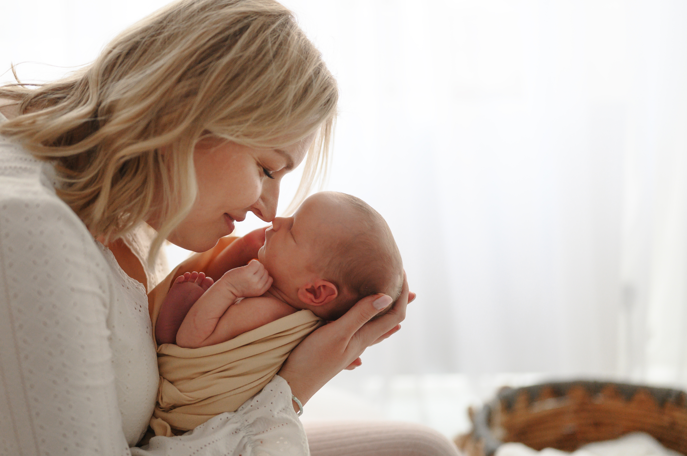
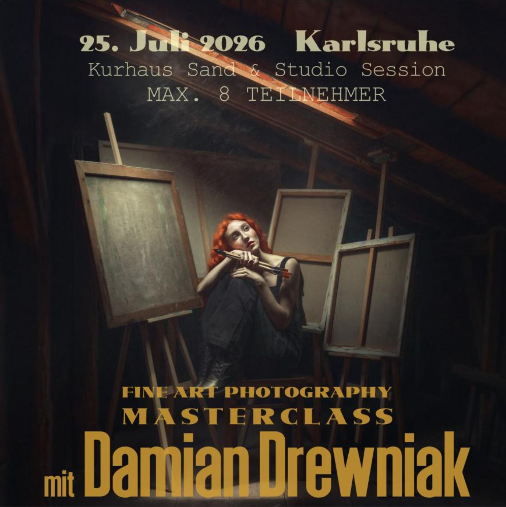
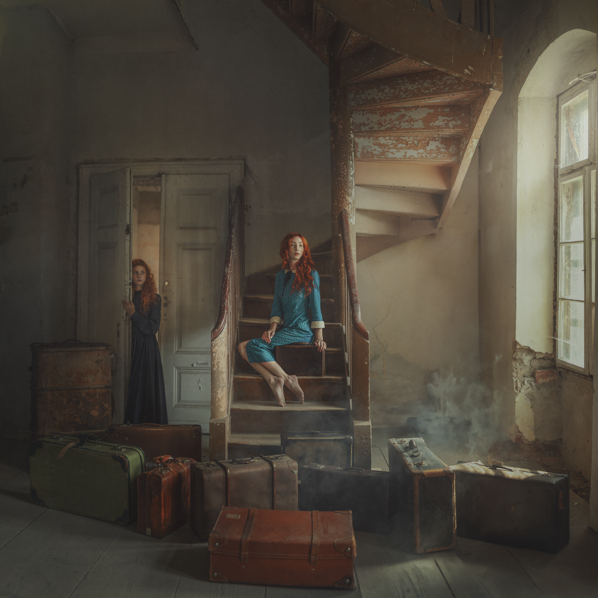

Fine Art Photography Masterclass 2026
FINE ART WORKSHOP DEUTSCHLAND 2026
MIT DAMIAN DREWNIAK
Am 25. Juli 2026 findet in Karlsruhe eine exklusive Fine Art Photography Masterclass mit Damian Drewniak statt. Dieser Workshop richtet sich an Fotograf:innen aus Deutschland, Österreich und der Schweiz, die ihre kreative Portraitfotografie, Lichtführung und Bildsprache bewusst auf ein neues Niveau bringen möchten.

Diese exklusive Masterclass steht ganz im Zeichen von Licht, Atmosphäre, Emotion und Storytelling und zeigt, wie aus einer Idee ein ausdrucksstarkes Fine-Art-Portrait entsteht.
Gemeinsam mit Damian Drewniak erschafft ihr außergewöhnliche Bilder voller Tiefe, Charakter und filmischer Stimmung.
Shooting Location:
Historisches verlassenes Kurhaus (Sandhotel) in Sand bei Bühl.
Bildbesprechung & Fine Art Editing:
im Studio von Anna Duleba Photography in Walzbachtal bei Karlsruhe.
Ihr bekommt Einblicke in den kompletten kreativen Prozess – von der Inszenierung und Lichtführung bis hin zur finalen Bildwirkung und professionellen Fine-Art-Bearbeitung.
Im Workshop enthalten:
? Eintritt in die Location
? Fotografieren mit professionellen Modellen
? Intensive Betreuung während des Shootings
? Fine Art Editing & Bildbesprechung
? Kreativer Workflow & Lichtführung
? Mittagessen im Studio
Workshop Preis:
560 € pro Person
Kleine intensive Gruppe – maximal 8 Teilnehmer
International Fine Art Artist
Wer ist Damian Drewniak?
Damian Drewniak gehört zu den bekanntesten Fine-Art-Fotografen Europas. Seine Werke werden international veröffentlicht und sind für ihre einzigartige Verbindung aus Licht, Atmosphäre, Emotion und filmischem Storytelling bekannt.
Über viele Jahre hinweg hat er eine unverwechselbare Bildsprache entwickelt, die Fotograf:innen aus ganz Europa inspiriert. Seine Arbeiten verbinden Kunst, Mode, Portrait und Emotion auf eine Weise, die weit über klassische Portraitfotografie hinausgeht.
Besonders bekannt ist Damian für seine außergewöhnliche Fähigkeit, aus einer einfachen Idee ein visuelles Kunstwerk zu erschaffen. Seine Workshops bieten seltene Einblicke in den kompletten kreativen Prozess – von der ersten Vision über die Lichtführung bis hin zur finalen Fine-Art-Bearbeitung.
Für viele Fotograf:innen ist die Teilnahme an einem Workshop mit Damian Drewniak nicht nur Weiterbildung, sondern eine kreative Erfahrung, die die eigene Sicht auf Fotografie nachhaltig verändert.

Persönliche Erfahrung
Meine persönliche Erfahrung mit Damian Drewniak
Als ich das erste Mal an einem Workshop mit Damian teilgenommen habe, ging für mich ein großer Traum in Erfüllung. Einen Künstler kennenzulernen, dessen Arbeiten mich über Jahre inspiriert haben, seinen kreativen Prozess live zu erleben und gemeinsam außergewöhnliche Bilder zu erschaffen, war eine ganz besondere Erfahrung.
Seitdem sind mehrere Jahre vergangen – und ich hatte das Privileg, bereits dreimal mit Damian Drewniak zusammenzuarbeiten. Jedes einzelne Treffen hat meine fotografische Entwicklung geprägt und meine eigene Bildsprache weiter verfeinert.
Mit dabei war häufig auch Ania Lisia, ein Model von internationalem Niveau. Die gemeinsame kreative Arbeit mit Damian und seinem Team war jedes Mal inspirierend und voller neuer Impulse.
Diese Workshops haben meine Fotografie nachhaltig verändert. Viele Techniken, Denkweisen und kreative Ansätze, die ich dort gelernt habe, nutze ich heute sowohl in meiner kommerziellen Arbeit als auch in meinen Fine-Art-Projekten.
Deshalb freue ich mich besonders, Damian 2026 erneut nach Karlsruhe zu holen und diese außergewöhnliche Erfahrung mit anderen Fotograf:innen teilen zu können.
Workshop Anfrage
Interesse am Workshop?
Sichere Dir Deinen Platz für die Fine Art Masterclass mit Damian Drewniak oder stelle Deine Fragen direkt per WhatsApp.
NEUGEBORENEN-WORKSHOP MIT ANNA DULEBA PHOTOGRAPHY

Mein persönlicher 1:1 Neugeborenen-Workshop für Fotograf:innen, die sich im Bereich Newborn Fotografie, Lichtführung, Posing und professioneller Bildbearbeitung weiterentwickeln möchten.
BEHIND THE SCENES
Ein Einblick in meine Neugeborenen-Workshops
In meinen Workshops geht es nicht nur um Technik – sondern darum, die Ruhe, Sicherheit und Emotion hinter einer echten Neugeborenen-Session zu verstehen.
Gemeinsam arbeiten wir mit echten Familien und Neugeborenen. Ich zeige meinen kompletten Workflow – von der Lichtführung, dem sicheren Posing und der Kommunikation mit den Eltern bis hin zu kleinen Details, die Bilder harmonisch und hochwertig wirken lassen.
Jede Session ist anders. Jedes Baby bringt seinen eigenen Rhythmus mit – und genau darin liegt die Magie der Babyfotografie.
Dieser Neugeborenen Workshop verbindet Newborn Workshop Deutschland, Babyfotografie Workshop, Neugeborenenfotografie lernen, Posing, Lichtführung und Bildbearbeitung in einem persönlichen 1:1 Coaching.

Neugeborenenfotografie Workshop – lerne die Kunst der Babyfotografie
Intensives Einzel-Coaching für Fotografinnen & Fotografen im deutschsprachigen Raum
In diesem exklusiven Neugeborenen-Workshop zeige ich dir meinen kompletten Workflow – von der Vorbereitung der Eltern, über sicheres Posing und Lichtführung bis zur feinen Bildbearbeitung in meinem typischen Stil. Das Coaching richtet sich an Fotograf:innen aus ganz Deutschland, Österreich und der Schweiz, die ihre Babyfotografie auf Premium-Niveau bringen möchten.
Der Workshop findet in meinem Studio in Walzbachtal (PLZ 75045) statt. Viele Teilnehmer:innen nehmen dafür bewusst eine längere Anreise in Kauf, um in Ruhe und fern vom eigenen Alltag zu lernen.
Ort & Kontakt
Ort: 75045 Walzbachtal, Friedhofstr. 10
Uhrzeit: 10:00 – 17:00 Uhr
Kontakt: 01578 578 5865 | annadulebaphotography@gmail.com
Inhalte des Neugeborenen-Workshops
- Grundlagen der Neugeborenenfotografie – Technik, Sicherheit, Kameraeinstellungen
- Kreative Posen & Bildkomposition für natürliche, emotionale Babyfotos
- Lichtführung – Arbeiten mit Fensterlicht & Studiolicht
- Kompletter Workflow in Adobe Lightroom & Photoshop
- Marketing & Kundenerlebnis für ein nachhaltig profitables Newborn-Business
- Bonus: kleines Starterpaket + ausgewählte Photoshop-Aktionen
Für wen ist dieses Coaching ideal?
Dieses 1:1-Coaching ist perfekt für Fotografinnen und Fotografen, die:
- in die Neugeborenenfotografie einsteigen wollen
- ihr bestehendes Portfolio auf höheres, konsistentes Niveau bringen möchten
- sich einen sicheren, klaren Ablauf für ihre Sessions wünschen
- lernen möchten, wie man harmonische Sets in Naturtönen baut
- Premium-Kundschaft im deutschsprachigen Raum anziehen wollen
Preis & Buchung
Intensives Einzel-Coaching im Studio:
1200 €
inkl. Snacks, Getränke & Mittagessen
Schreibe mir eine kurze Mail mit deinem Wunschtermin, deinem aktuellen Level und ob du schon mit Newborns arbeitest.
Die Anfrage ist völlig unverbindlich – auch wenn du dir noch unsicher bist oder einfach erst einmal Fragen hast.
Das 1:1 Coaching ist auf Deutsch oder auf Wunsch auch auf Polnisch möglich.
Mehr von meiner Neugeborenenfotografie
Aktuelle Sessions, Vorher-/Nachher-Beispiele und Einblicke hinter die Kulissen findest du auf Instagram:
Business & Marketing
Business & Marketing für erfolgreiche Babyfotograf:innen
Professionelle Neugeborenenfotografie endet nicht mit einem schönen Bild. Wer langfristig erfolgreich sein möchte, benötigt nicht nur fotografisches Können, sondern auch eine klare Strategie für Sichtbarkeit, Kundengewinnung und Positionierung.
In diesem Modul teile ich die Erfahrungen aus meiner täglichen Arbeit als professionelle Neugeborenenfotografin und zeige, welche Systeme und Strategien mir geholfen haben, mein Business nachhaltig aufzubauen.
- SEO für Fotograf:innen – wie du regional und überregional gefunden wirst.
- Website-Strategie – warum deine Website dein wichtigstes Verkaufstool ist.
- Instagram ohne Druck – wie Sichtbarkeit auch ohne tägliches Posten funktioniert.
- Kundenkommunikation & Pricing – wie du Premium-Kund:innen anziehst und langfristig bindest.
- KI im Fotograf:innen-Business – praktische Möglichkeiten für Texte, Organisation, SEO und Marketing.
Dieses Modul spart dir Monate an Ausprobieren und gibt dir ein solides Fundament, um dein eigenes Neugeborenen-Business professionell weiterzuentwickeln.
Bonus nach dem Workshop
- Workshop-E-Book mit den wichtigsten Inhalten aus Fotografie, Workflow und Business.
- 2 Stunden persönliche Beratung via Google Meet, flexibel innerhalb der nächsten 3 Monate einlösbar.
FAQ
Häufige Fragen zum Workshop
Antworten auf die häufigsten Fragen rund um die Fine Art Masterclass mit Damian Drewniak.
Für wen ist der Workshop geeignet?
Der Workshop ist sowohl für Anfänger als auch für fortgeschrittene Fotograf:innen geeignet. Damian arbeitet individuell mit den Teilnehmern und vermittelt seine Arbeitsweise verständlich und praxisnah.
Welche Kamera sollte ich mitbringen?
Du kannst mit jeder Kamera teilnehmen, die manuelle Einstellungen erlaubt. Viel wichtiger als das Kameramodell sind Lichtverständnis, Bildaufbau und kreatives Denken.
Darf ich die entstandenen Bilder verwenden?
Ja. Die Teilnehmer dürfen die während des Workshops entstandenen Bilder gemäß der Vereinbarung für Portfolio, Website und Social Media verwenden. Die genauen Nutzungsrechte werden vor dem Workshop kommuniziert.
Wie läuft der Tag ab?
Der Tag beginnt mit einer Einführung und dem Shooting im historischen Kurhaus. Anschließend folgt die gemeinsame Bildauswahl, Bildbesprechung und Fine Art Bearbeitung im Studio von Anna Duleba Photography.
Kann ich Fragen zur Bildbearbeitung stellen?
Unbedingt. Fragen zu Lichtführung, Workflow, Bildauswahl und Fine Art Bearbeitung sind ausdrücklich erwünscht. Der Workshop lebt vom direkten Austausch mit Damian.
Teilnehmerstimmen
Was meine Teilnehmer über die Workshops sagen
„Wir möchten uns ganz herzlich bei Ihnen bedanken für die unglaublich warme Aufnahme, die tolle Atmosphäre und die hervorragende Organisation des Workshops.
Wir haben uns vom ersten Moment an sehr wohlgefühlt und herzlich willkommen gefühlt – das ist keineswegs selbstverständlich.
Vielen Dank auch für all die wertvollen Kenntnisse, die Einblicke in Ihren Workflow und die Leidenschaft, die Sie mit uns geteilt haben.
Der Workshop war für uns unglaublich inspirierend und hat uns viele neue Perspektiven eröffnet.
Besonders beeindruckt hat uns die professionelle Organisation, die entspannte Atmosphäre und die Geduld, mit der Sie Ihr Wissen weitergeben.
Vielen Dank für alles. Wir nehmen nicht nur neues Wissen, sondern auch ganz viel Inspiration mit nach Hause.“
Individuelles Coaching
Noch nicht das Richtige für dich dabei?
Wenn du dich nicht nur im Bereich Neugeborenenfotografie weiterentwickeln möchtest, sondern ein persönliches Coaching in Babybauch, Familie, Fine Art, Frauenfotografie oder Business suchst, können wir dein Coaching individuell planen.
Gemeinsam schauen wir, wo du gerade stehst, welche Bildsprache du entwickeln möchtest und welche Schritte dich fotografisch oder unternehmerisch wirklich weiterbringen.
Dein individuelles Thema
- Babybauch & Familienfotografie
- Fine Art & Frauenfotografie
- Portfolio, Workflow & Bildbearbeitung
- Business, Positionierung & Sichtbarkeit